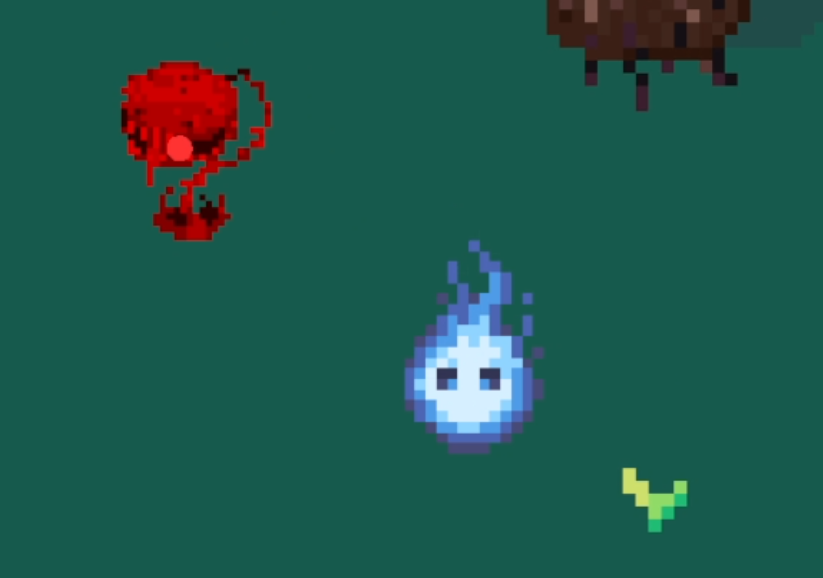
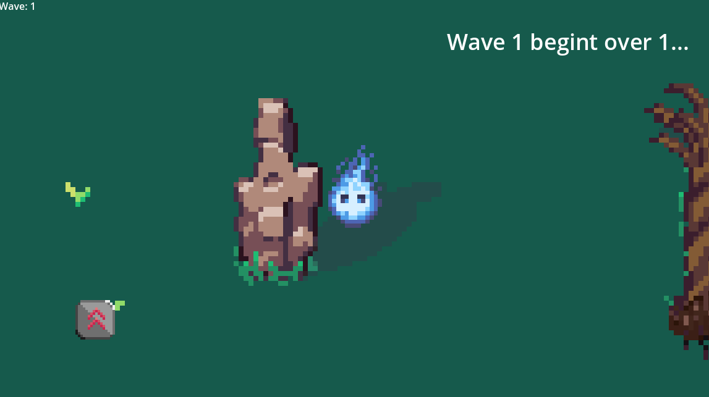
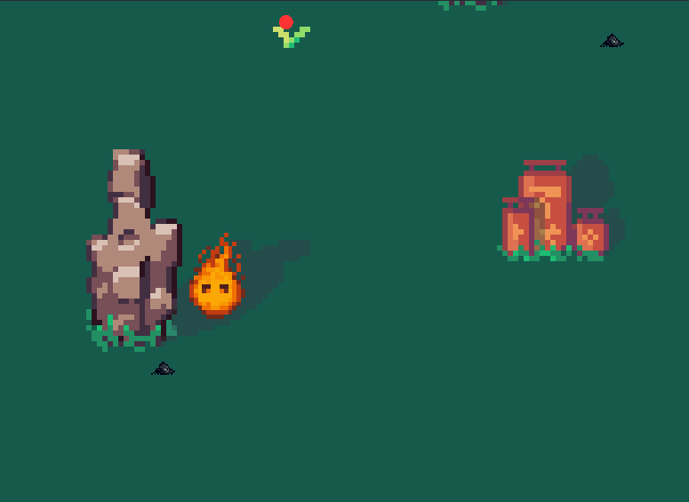

Description:
In Ash Bound, you play as a flame creature in a jungle. Defeat enemies throughout the jungle to stay alive. After death, an pile of ash will remain with the last power-up you had used before death, leaving trails behind and leaving your actions a mark.



This game was created for the first time in an different game engine, called the Godot Game Engine. I was quite a fun experience throughout the project.
Other then that, I had worked with other people to create this project. Though they don't want to reveal their names, I am really thankful for even experiencing an different engine other then Unity.